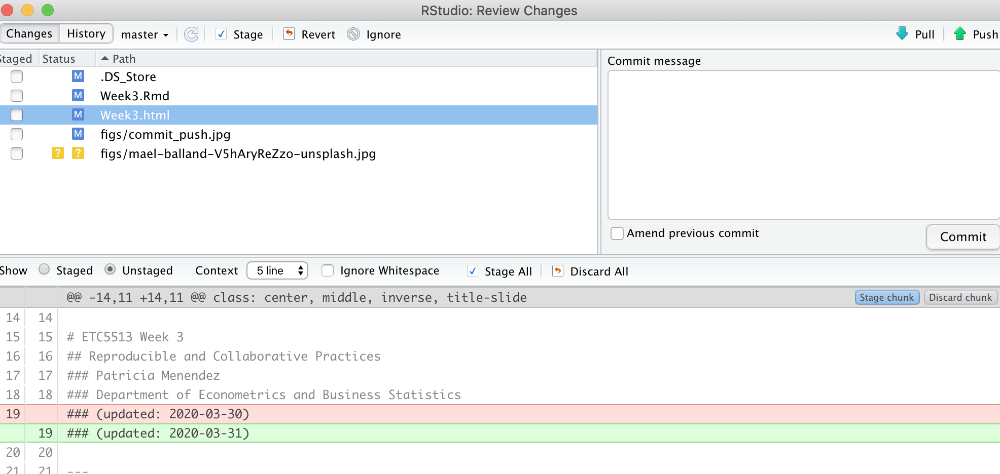
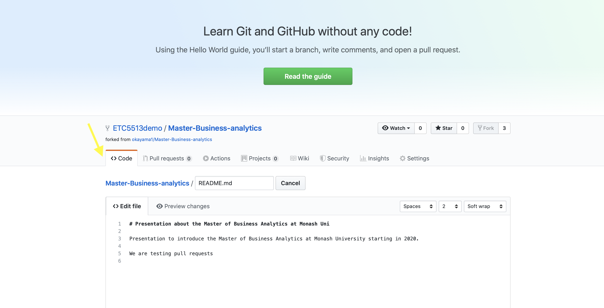

The repository is fully mirrored, including it’s full history in various servers and/or lcoations
If any server malfunctions, the repositories can be restored from any of the other servers
Every clone is (theoretically) a full backup of all the data
Distributed Version Control: Git
We are going to use a distributed version control called Git
Git history
Git was created by Linus Torvalds in 2005 for development of the Linux kernel and since then many other kernel developers have been contributing to its development. The maintainer since 2005 is Junio Hamano.
As with most other distributed version-control systems, and unlike most client–server systems, every Git directory on every computer is a full-fledged repository with complete history and full version-tracking abilities, independent of network access or a central server.
Let’s think of the connections between the different versions of an R project as a tree (Git tree).
Git tree example
White circles represent each version of the project
We have what we call master/main (default branch)
We have branches that appeared and then merged with the master
We need to learn
How Git operates –> shell/command line
How to connect our R projects to a Git repo
How to connect our local Git repo to a Git Cloud repository (GitHub).
Command Line Interface (cli)
In most cases (non-linux users) use a Graphical User Interface (GUI) to interact with their programs and operating systems
However, at the beginning of the computing times most people would use the command line interface to interact with their computer
Git and Command Line
We will learn how to use the shell/command line interface
Why?
We will use the command line interface to interact with Git and with Github
The shell or command line interface is an interface where the user types commands
This interface allow us to control our computer using commands entered via our keyboard
That means that instead of using a graphical user interface (GUI) + our mouse to open and close programs, create folders and moving files, we are going to type commands
Command Line Interface
Also known as the Shell, command line interface (cli) or terminal is an interface for typing commands to interact directly with a computer’s operating system.
Examples of things that we can do from the shell or terminal:
Navigating through folders and files
Create/delete folders
Run and install programs (i.e interact with Git)
And much more!
Terminal in action
Typically when you open your terminal, it will welcome you with a prompt that looks like this:
patricia@computerid-macbook:~$
or with the new Catalina Mac OX
patricia@computerid ~ %
On Windows it will contain the same elements but look like this:
patricia@computerid-pc MINGW64 ~$
Terminal in practice
We will start writing commands after ~$ or ~% depending on the terminal version that you are using
The commands that we are going to use are the same regardless the terminal version you have.
Let’s start learning the commands to navigate our computer and to interact with Git via the command line interface
What is the path to my current computer location?
pwd: print working directory or present working directory
Command Line Basics: Navigating between directories
cd: Change directory
First we need to make sure where we are (pwd).
The cd command syntax is very simple, we just need to specify the directory that we want to navigate to
At any moment of your navigation, you can use the pwd command to confirm your current location
A path that starts with / is assumed to be absolute.
cd in practice!
My current location is Documents. I want to get to Documents/Research/COVID
cd Research means that we move into Research
cd COVID means that we move into COVID
. means the current directory COVID
cd .. means (parent directory) that we move back into Documents
The ~ symbol is a shorthand for the user’s home directory and we can use it to form paths:
If you are in your Downloads directory (/Users/John/Downloads) typing cd ~ will bring you to your Home directory /Users/John!
More commands practice!
My current location is COVID, or really Documents/Research/COVID
.. is shorthand for the parent of the current working directory
cd .. means that we move into Research (1 directory up). That is from COVID back to Research
cd ../../ means that we move up two directories: from COVID to Documents
mkdir Project1 Project2 means “make two new directories (folders) called Project1 and Project2”.
More commands practice!
mv move files or folders: takes two arguments, the first being files or folders to move and the second being the path to move to.
cp this command is used to copy files or group of files or directories. When copy files we need to use cp -r to copy all the directory contents.
rm remove files and folders
To remove entire folders rm requires the -r (recursive) flag
We can create empty files with touch example.qmd
Cheat sheet for command line
Excellent summary about the commands that we will be using can be found here.
Please read and practice 1-5 sections once you have installed your command line interface/terminal/Git Bash Shell
See next slides for instructions about how to install your command line interface/terminal/Git Bash Shell.
You don’t need to learn all linux commands only those that we are going to use!
Let’s get some practice using the terminal
Installing the command line interface and Git
Git for Windows
Please follow the tutorial here. This tutorial teach you step by step how to install Git and the command line interface in your Windows system.
If you following the steps above you will get Git install in your computer as well as Git Bash Shell which is the terminal that you will be using if you are a Windows user.
Git for Mac
Go to Applications folder, open Utilities, double-click on Terminal
Or open a Finder Window and search for “Terminal”
Once you have found the terminal:
Open your Terminal and check if you have Git installed:
By typing in your terminal git version
If Git is installed you will see something like git version 2.20.1 (Apple Git-117)
Check if you have Git installed: Type git version in your terminal.
If Git is installed you will see something like: git version 2.20.1
If Git is not installed:
Type in your terminal: sudo apt-get install git
Prior to the tutorial:
For Windows users please install Git and the command line interface (Git Bash Shell) following the installation instructions.
For Mac and Linux users please make sure you have Git installed and you know where to find your terminal (Mac users –> Applications > Utilities > Terminal), and if not installed, please follow the instructions to install it.
If you have any problems with the installation please make use of the consultation hours to get some help
Also remember that in Moodle you have the Forum for discussion where you can talk to each other, share tricks and resources. Please make use of it!
Git recap
Tracking all the changes to a project
Allows you to go back and forth between versions
Check files history
Tag specific versions for quick referencing
Review changes made by collaborators in the project
Create project branches that allow you to work on the project without interfering with the master project
Merging branches to master project
To interact between our projects and Git, we are going to use the shell/command line interface
How does Git connect with our reproducible projects?!
How does Git work?
We have learned that Git is a distributed version control system.
But how does it actually work?
Git works with snapshots of miniature files systems not with differences
Every time you save files in your project, Git takes a picture of what all your files look like at that moment and stores a reference to that snapshot.
If files have not changed, Git does not store the file again.
If a file has no change, Git stores a link to the previous identical file that it has already stored in the repository history.
Snapshots (Database)
Git tree and Snapshots (Database)
Each version corresponds to one of the dots on the git tree.
Files in a Git repository
The states in a Git repository are: the working directory, the staging area (index) and the git directory:
The working directory is the current snapshot that you are working on.
The staging area (index) is where modified files are marked in their current version ready to be stored in the database (i.e. the index of changes).
The git directory is the database where the history is stored
In your file system you will see the folder and the files of your project
If you already have a GitHub account and want to keep them all together, you can add another email to your current account.
Git repo and a remote repository
GitHub is our remote repository
Collaborative
From GitHub <–> to our computer
Create a repository (repo) on https://www.github.com
Clone this GitHub repository into our computer: making a “local copy”
Work on our local copy of the repo
Stage and Commit changes to local repository
Push those changes into the remote repo in GitHub.
Pull changes from the remote repo to our local repository.
Our goal is to have both our local and remote repositories synchronized
Let’s look at all these in more detail!
Creating a repo on GitHub
Login into GitHub
Click the ‘+’ icon on the top right on the menu bar and select ‘New Repository’.
Creating a repo on GitHub
Important:
Repo name
Visibility: public or private
Make sure it is initialized with README.md: It is important to have a README.md file for every repository. GitHub will use this file as the “presentation” of the repository and should briefly describe what the repo is about.
Creating a repo on GitHub
Configuring Git in your Rstudio using the terminal
First open your command line interface/Terminal/Git Bash Shell:
Configuring Git in your Rstudio project
First of all we need to get your Git configured in Rstudio (the same follows for your own computer):
Open your command line interface/Terminal/Git Bash Shell and type:
In the tutorial you will learn how to add an SSH key into your workflow:
When working with a Git repository you will be required to identify yourself to GitHub using your username and password each time to do a commit!.
An SSH key is an alternative way to identify yourself that does not require you to enter you username and password every time
SSH keys come in pairs, a public key that gets shared with services like GitHub, and a private key that is stored only on your computer or in your Rstudio Cloud project.
From our shell or command line: 1. Navigate to the computer location where we want to download the github repo 2. git clone git@github.com:okayama1/Git_demo.git 3. This will create a folder in your computer with the github repository files and folders
Git Workflow
Example:
We modified a qmd file from the working directory
We add the modified files to the staging area to be stored: git add
We move the files from the staging area into the git directory (git commit) capturing a snapshot
We connect with the remote repository git push and update files
Tracked and untracked files
In a git repository tracked files are those which are part of the git repository
However, we can also have untracked files for which their history is not tracked
Tracked files are files that were in the last snapshot; they can be unmodified, modified, or staged. In short, tracked files are files that Git knows about.
Untracked files are everything else — any files in your working directory that were not in your last snapshot and are not in your staging area.
We will learn more about this in the coming weeks.
But if you want some early reading, have a look here
Recap: From clone to first commit
git clone "remote repo address" is a Git command line utility which is used to target an existing repository and create a clone, or copy of the target repository in your local computer.
git add filename is a Git command that adds a change in the working directory to the staging area.
git commit -m "Message": The Git commit command captures a snapshot of the project’s currently staged changes. (m = message for commit. The git commit is used to create a snapshot of the staged changes along a timeline of a Git projects history.)
git push origin master (or main): The git push command is used to upload local repository content to a remote repository, in this case to the master (or main) branch.
GitHub Workflow: Visual example
Clone pulls from the GitHub repo
Working in your computer and updating the remote repo in GitHub
General Workflow (via Terminal)
You typically clone a repo only once. After that each time you work on your repo you will use the following Git commands:
git pull origin "branch name" is used to fetch and download content from a remote repository (after the repo has been cloned) and immediately update the local repository to match that content.
git status displays the state of the working directory and the staging area
git add file_name adds changes in the working directory to the staging area
git commit -m "Message" is used to create a snapshot of the staged changes along a timeline of a Git project history
git push origin "branch name" command is used to upload the local repository content to a remote repository in GitHub
Cheat sheet on how to use the terminal for Git
Excellent summary about the commands that will be using can be found here
Commit messages
We can write our commit messages like this:
git commit -m "Message"
Alternatively, we can also use an external editor. This is useful when we want to create extended commits and if we forget to use git commit -m and we type git commit
We need to set VS code as the editor for Git by typing the following in the command line interface/Terminal/Git Bash Shell:
git config --global core.editor "code --wait"
You can check if this has worked by committing without using -m by just typing in your cli git commit.
Then the VS Code editor will open and you can write your commit directly there.
If you are a Windows user and this does not work for you, you might need to set up your VSCode path manually.
Git Learning Process
First of all, learn to manage your own projects on GitHub: get familiar with committing, pushing and pulling.
Create repos on GitHub first
Always initialize repos with README
Clone the repo to your local directory and start adding files and folders!
Data (will go into the data folder)
For larger files, data can be stored in Googledrive
we will also learn how to store large files in GitHub
Commit/Push often.
Sync across all your workstations.
Rstudio and GitHub
The status/staging panel in Rstudio
Rstudio and GitHub
RStudio keeps git constantly scanning the project directory to find any files that have changed or which are new.
By clicking a file’s little “check-box” you can stage it.
Understanding the symbols in the Rstudio Git panel
Blue-M: a file that is already under version control that has been modified.
Orange-?: a file that is not under version control (yet…)
Green-A: a file that was not under version control, but which has been staged to be committed.
Red-D: a file under version control has been deleted. To make it really disappear, you have to stage its disappearance and commit.
Purple-R: a file that was renamed. (Note that git in Rstudio seems to be figuring this out on its own.)
Configuration
The Diff window shows what has changed between the last committed version of a file and its current state.

Making a Commit
Super easy: - After staging the files you want to commit… - Write a brief message (first line short, then as much after that as you want) and hit the commit button.

The History window
Allow us to understand past commits.
Easy inspection past commits.
See what changes were made at each commit.
Important:
We can interact between Git, GitHub and our local repository using the terminal only
We can interact between Git, GitHub and our local repository using Rstudio
In this unit you must learn how to use Git via the command line interface/Terminal/Git Bash shell as that is the universal way of using git and it will be very useful for using with any programming language.
To do before the tutorial
Create a GitHub account
Install Git and the command line interface in your computers (please see info on previous slides)
Make sure you read again all this material
Please watch the tutorial video before before the tutorial
Complete the online quiz
Assignment 1
Assignment 1 will be released on Wednesday of this week (Week 3)
It will be due at 11:55pm on Thursday, March 30th (Week 5).